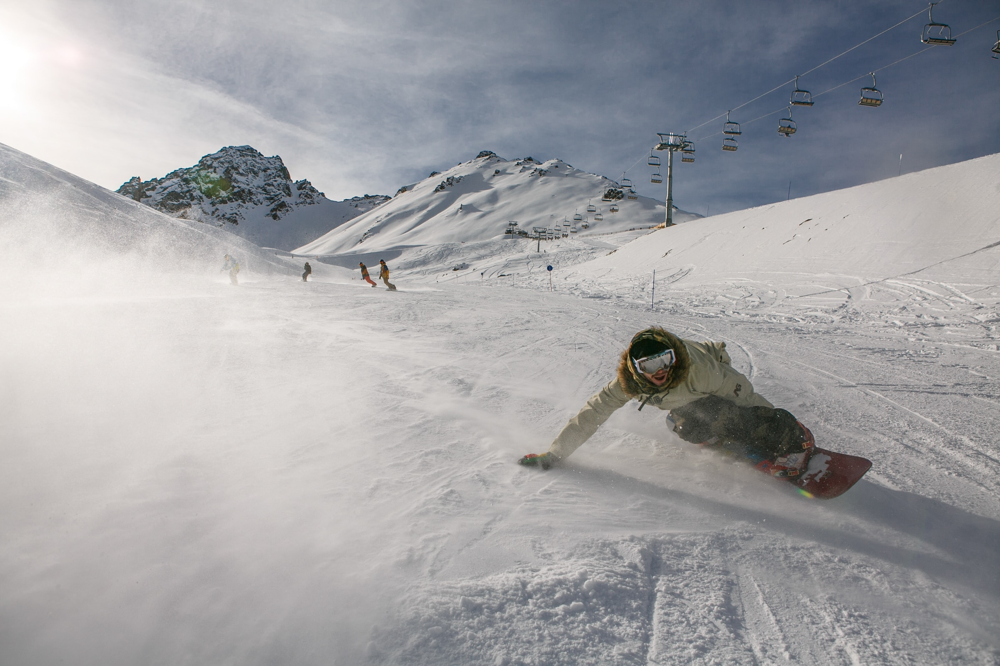

서울=연합뉴스) 임형섭 한지훈 기자 = 문재인 대통령은 3일 북한 목선의 삼척항 입항 사건과 관련, 김유근 청와대 국가안보실 1차장에 대해 엄중경고 조치를 했다.
문 대통령이 이번 목선 사태에 있어 청와대 안보실도 일정 부분 책임이 있다는 점을 인정하고 내부 인사를 문책한 것이어서 주목된다.
고민정 청와대 대변인은 이날 기자들에게 공지 메시지를 보내 이 같은 조치사항을 전했다.
그동안 청와대는 지난달 15일 목선이 입항하는 과정에서 국방부가 안이하게 대처했고, 또 국민에게 정보가 제대로 전달되지 못한 과정에서 초기부터 이 문제를 두고 군과 협의해 온 국가안보실의 잘못이 있을 수 있다고 보고 자체조사를 해왔다